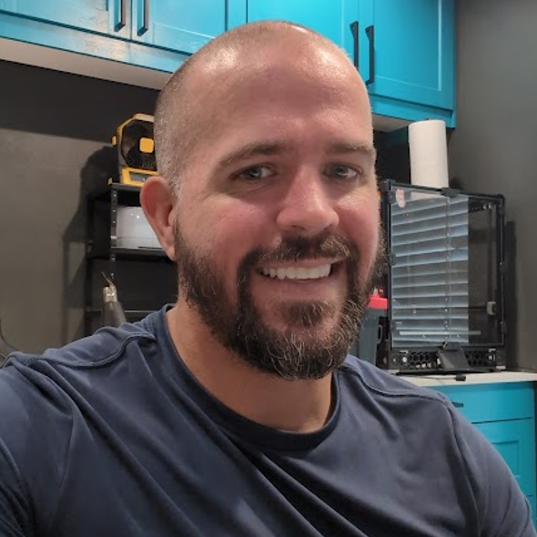

Cover Letter
Letters of recommendations
...our company would not have achieved the level of technical maturity and product success that it did without his contributions. He played a significant role in building the foundation that positioned Med X Change for acquisition, and I remain grateful for the impact he had on our organization...
...Paul was someone I trusted to tackle our most challenging initiatives. He consistently demonstrated ownership, sound judgment, and an unwavering commitment to delivering results...
...I recommend Paul without reservation. Any organization seeking an exceptional engineering leader, software architect, or technical executive would be fortunate to have him on their team. I am confident he will bring the same level of integrity, innovation, and execution that made him invaluable at Med X Change...
...enthusiastically recommend... for any role as a Software Engineer Lead or Architect...
...one of the brightest engineers I have ever worked with...
...his technical skills are exceptional, and he consistently demonstrated a deep understanding of software architecture and engineering principles...
...his personal skills, including strong communication and teamwork, make him a pleasure to work with.
...I’ve consistently seen him demonstrate strong technical capability, ownership, and a thoughtful approach to complex engineering challenges...
...Overall, Paul is a dependable and capable engineer who contributes meaningfully to both the design and evolution of complex systems. He works well across teams, takes ownership of important areas, and consistently adds value in technical discussions and implementation efforts...
...I would strongly recommend him for roles that require solid engineering fundamentals, collaborative problem-solving, and the ability to contribute to shared platform infrastructure...
...I was continuously impressed by his breadth of knowledge and ability to learn and gain expertise in a wide array of technologies...
...Frequently Paul would bring to the team a new technology or way of doing things that later proved to be a very good idea. Rather than just scratch the surface he would dig in and become extremely knowledgeable on technology that the team was using. I believe Paul did a good job at choosing technology that was the right fit for the task. Sometimes that meant using a new technology and sometimes it meant knowing when to use something that had been proven over time already...
...confident he would be a benefit to any software team where he is able to lead and contribute to the technical architecture of a solution or product...